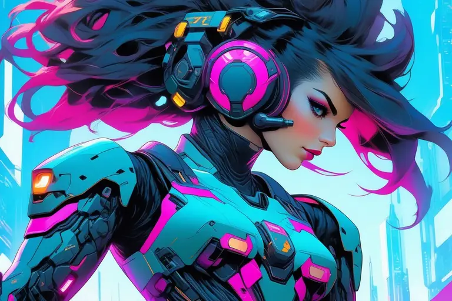
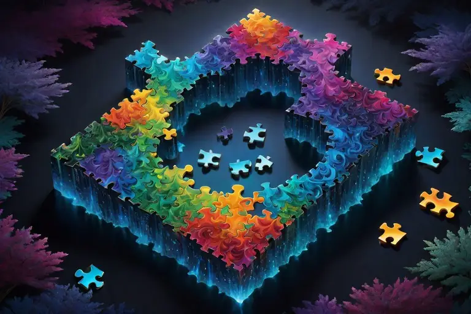

Meaning in handmade campaigns
In a typical handmade campaign, the meaning comes from the player curiously following the trail set up by the human author to see what kind of gift they’ll give them.
This gift could be any of the following:
- a spectacle.
- a heartfelt message.
- an educational message.
- a thrill ride (action or horror).
- a fair challenge.
- giving a taste of something new and unexpected or anything else interesting that an unknown stranger could offer the player, from one human to another.
Usually in handmade campaigns it's more about the player's interaction with the author that is at the center of the experience rather than whatever mechanically happens in the game. Technically the game itself is nothing more than window dressing and isn't intended to stand on its own.
Sometimes whatever special thing that the game tries to convey/give to the player could have worked fine as a video, audio, comic, infographic, a still image, a poem or even an article too.
Overall, the main idea is often just about giving over your control and attention in the hands of the author and the realm they’ve constructed for you to dip into, usually in hopes of them giving you something valuable (information, experience, challenge, delight, etc.) that will make your life more wonderful in some way. Make you stronger, smarter, faster, better, wiser.
Depending on the game it may come sometimes in a "bitter medicine" type of way too, like revealing a shocking truth, making you realize the harrowing reality of something terrible, or otherwise giving you some information or experience that, while technically, is useful and necessary, isn’t really pleasant.
As an example of that, a game may talk about topics of narcissistic abuse and give you hints on how to deal with that. It ain’t a “fun” game per se, but it is helpful and therefore worthy of experiencing, especially if it's a relevant topic for you.
Meaning in procedurally generated campaigns

In a procedurally generated campaign, the meaning comes through the gameplay itself.
Meaning is gained when something new, interesting, surprising or unexpected happens as a remarkable moment during play. These moments, circumstances or chain-of-events - both big and small - naturally create memorable stories that let the player experience great moments, like these:
- Get a satisfying feeling by doing something cool, either through skill, luck or persistence. (Feeling empowered is great for mental health.)
- Overcome a personal challenge that felt uncertain or impossible before, now realizing they've grown/advanced/improved as a person. (Becoming a better human and noticing it is highly motivating to live more happily.)
- Learn something new through their own actions instead of anyone telling them about it, feeling powerful they made that discovery on their own. (A gained feeling of independence gives confidence and builds self-esteem.)
- Get a comedic delight when something absurd or hilarious happens, giving them a moment to relax, laugh and be in the moment. (This can be very nice and soothing if life is currently being difficult or stressful otherwise.)
- Feel empowered by expressing themselves through customization or style of play, feeling a true sense of freedom and agency over their own actions. It gives them a moment and space to be their true selves and do things their own way. (If regular life is too restrictive to try something fun, this can be an outlet that can help you carry on.)
- Enjoy a moment of exploring possibilities by doing experiments in a virtual space where anything is possible and allowed, living out a specific fantasy or a hidden desire that wouldn't be possible to do in an otherwise scripted and restricted game. (Experimentation is the funnest way to learn, especially if it results in spectacular unexpected outcomes.)
All these can happen both in singleplayer and multiplayer. Infinite metagames are not restricted to solo experiences only, they can be implemented in any game that has the prerequisites and structure for it.
The difference between handmade and procedural campaigns, meaning wise
Both handmade and procedural campaigns are specific tools to do a specific job; they're both valuable and both good in their own ways. Handmade campaigns are better for tailored specific gifts that focus on a single thing and deliver it in the most suitable packaging.
Procedural campaigns however have a special strength in that they can be played infinitely and expanded endlessly with new content. This is made possible by how content is designed, organized and handled within a procedural, gameplay driven game. A pure scripted storyline driven game is unable to do this. This special trait gives it the advantage of creating an environment that allows for emergent gameplay/behavior to happen spontaneously.
To quickly explain why this works, when it comes to new content, anything added to a hand-made campaign is going to be Additive Content, whereas anything added to a procedural campaign is going to be Multiplicative Content.
This the difference between these two types of content:

The former (Additive Content) is single-use content that cannot combine freely with any of the other content in the game; the player will view it once and the novelty factor of it will be gone rather quickly soon after. Additive Content is best used for telling very specific stories or presenting highly curated experiences.
Since Additive Content can expire so fast, usually within minutes or even seconds, the author may feel pressure about the work vs benefit ratio of such content, especially if it took days, weeks or months to create. It would either have to reach a very wide audience or atleast reach people of the highest importance (to the author) for it to matter and feel worthy of the invested time and energy it took to make it. Otherwise it won’t be a sustainable business/hobby in the long term.
The latter (Multiplicative Content) is flexible, modular, swappable and combinable. Multiplicative Content is generally cheaper/quicker to produce once a robust framework has been set up prior to support it.
Additive Content usually requires the programmer to create special rules that apply to each piece of Additive Content individually, which can create a lot of extra programming work for some of the more complex pieces of Additive Content to do what the author/writer of the handmade campaign envisioned, yet even then it’ll still be rather restricted in how its allowed to work. Meanwhile, Multiplicative Content gets to enjoy the benefits of standardization and modularity where the content system was set up intelligently so that this type of content is naturally able to bend into almost any kind of situation quite freely.
The amount of gameplay length Multiplicative Content can add is often exponentially multiplicative, hence the name, meaning when it interacts with old/existing content, it can create virtually endless new combinations and new possibilities to use said old/existing content, giving it new life with *every* new piece of added Multiplicative Content.
This is made possible by using randomization and procedural generation, as well as robust game mechanics and modular game content that allow some degree of chaos and unpredictability. Things can be shuffled around, things can be spawned in virtually infinite different ways and combinations. The system is built in all the ways to support this type of usage. This flexible, modular system can allow a procedural campaign system to generate virtually any type of situation.
As such Multiplicative Content is a far better option for dynamic and emergent gameplay experiences - the very type that can have emergent/surprising moments that creates player stories that feel personal and therefore meaningful to experience by the player.
And that's the big difference; in a human author written scripted narrative, the meaning/motivation to play the game comes from curiously watching where the story will take me and what I may learn from it.
In an infinite game the meaning motivation comes from the emergent situations that I end up stumbling upon that end up becoming a memorable story. My own story. Something that I did and not as a part of a predetermined spectacle where I was merely a guest, a passive recipient.
In the handmade campaigns, I'm ultimately just a passive listener, almost like watching TV as a spectator, following orders in a Simon Says-esque way with no real freedom of my own. With infinite games, I'm an active trailblazer making my own path. The story happens just by virtue of me playing the game. Not only that, but it's a personal story that is special to me, hence why it feels so meaningful and more tangible than someone else's story.
In the end, it's all about the right tool for the right job. If you want to gift a specific curated message to your players, handmade campaigns will do nicely. If you want the player to have a great personal experience that the player emergently creates by themselves by virtue of simply playing the game, then procedural campaigns will work much better in that case.
Talk about it
Questions, disagreements and ideas of your own are all welcome. Discuss this article with other readers on the Reactorcore Games Discord, follow new articles and dev news on Patreon, or write to me directly.